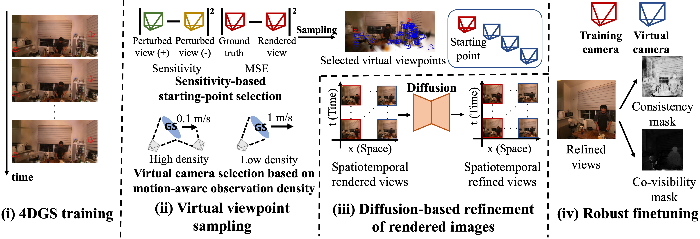

4D Gaussian Splatting (4DGS) can render dynamic scenes photorealistically. However, with limited viewpoint coverage, some spatiotemporal regions remain sparsely observed, leading to artifacts, particularly under large motion. Existing approaches leveraging generative models rely on heuristic virtual-viewpoint selection and refine the rendered views. As a result, they cannot actively explore such sparsely observed regions.
To address this issue, we propose a pipeline that actively selects spatiotemporal virtual viewpoints to improve 4DGS reconstruction. Our method selects virtual viewpoints for generative enhancement based on the rendering sensitivity and motion-aware observation density of 4D Gaussians, prioritizing views that alleviate observation sparsity. In the refined images, we filter out regions that conflict with captured observations or are likely to contain generative errors and then fine-tune 4DGS using only the reliable regions.
We evaluate our method on multi-view video benchmarks using new train/test splits designed to induce observation gaps. Results show consistent improvements over prior viewpoint selection strategies and fine-tuning methods in both qualitative and quantitative evaluations, while reducing artifacts.

FillGS fills observation gaps in 4D Gaussian Splatting through
1. Spatiotemporal virtual-viewpoint selection
2. Diffusion-based generative refinement
3. Robust fine-tuning with reliable generated regions
FillGS actively selects viewpoint-time candidates that observe under-constrained 4D Gaussians. Starting viewpoints are chosen based on both reconstruction error and local rendering sensitivity, so that regions with unstable renderings are prioritized for exploration. Candidate virtual viewpoints are then scored using a motion-aware observation deficiency measure, which assigns higher priority to fast-moving Gaussians that have been observed only sparsely. Rendered views from the selected virtual viewpoints are refined by a video diffusion model, and 4DGS is fine-tuned using consistency and co-visibility masks to suppress generative errors and avoid degrading well-observed regions.
@inproceedings{otonari2026fillgs,
author = {Otonari, Takashi and Yamasaki, Toshihiko},
title = {FillGS: Filling Observation Gaps in 4D Gaussian Splatting via Viewpoint-Time Selection and Generative Refinement},
booktitle = {ECCV},
year = {2026},
}